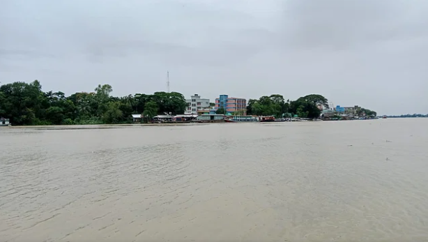

সুনামগঞ্জে কমছে নদীর পানি, রোদে স্বস্তি

সুনামগঞ্জে গতকাল শুক্রবার রাতে বৃষ্টি হয়নি। তবে উজানে ভারতের চেরাপুঞ্জিতেও বৃষ্টি কম হয়েছে। যে
কারণে পাহাড়ি ঢল নামছে কম। তাই সুরমা নদীর পানি কমছে। সেই সঙ্গে ঝলমলে রোদ ওঠায় স্বস্তি
ফিরেছে মানুষের মনে।
সিলেটের সীমান্তবর্তী কয়েকটি উপজেলায় ভারী বৃষ্টি ও উজানের ঢলে বন্যা দেখা দেওয়ায় সুনামগঞ্জেও
মানুষের মনে আতঙ্ক দেখা দিয়েছিল। প্রশাসনের পক্ষ থেকেও লোকজনকে সতর্ক করা হয়।
গত সোমবার বিকেল থেকে গতকাল শুক্রবার সকাল পর্যন্ত সুনামগঞ্জ জেলায় বৃষ্টি হয়েছে। এতে জেলার
সুরমাসহ বিভিন্ন নদ-নদীর পানি বাড়ে। স্থানীয় লোকজনের মনে বন্যার আশঙ্কাও দেখা দেয়। তবে
গতকাল শুক্রবার রাতে বৃষ্টি না হওয়ায় এবং আজ শনিবার সকাল থেকে রোদ ওঠায় আতঙ্ক কেটে
গেছে। ফিরেছে স্বস্তি।
সুনামগঞ্জ শহরতলির সুরমা নদীর তীরের সদরগড় গ্রামের বাসিন্দা হুমায়ুন আহমদ বলেন, নদীর পানি
হঠাৎ করেই বাড়তে শুরু করায় মানুষের মধ্যে বন্যার ভয় দেখা দিয়েছিল। তবে বৃষ্টি থেমে যাওয়ায়
নদীর পানি কমছে। পানি উন্নয়ন বোর্ডও বলছে বন্যা হবে না।
সুনামগঞ্জ পানি উন্নয়ন বোর্ডের কর্মকর্তারা জানান, সুনামগঞ্জের নলজুর, পাটনাই, যাদুকাটা নদীর পানি
বিপৎসীমার নিচে রয়েছে।
|